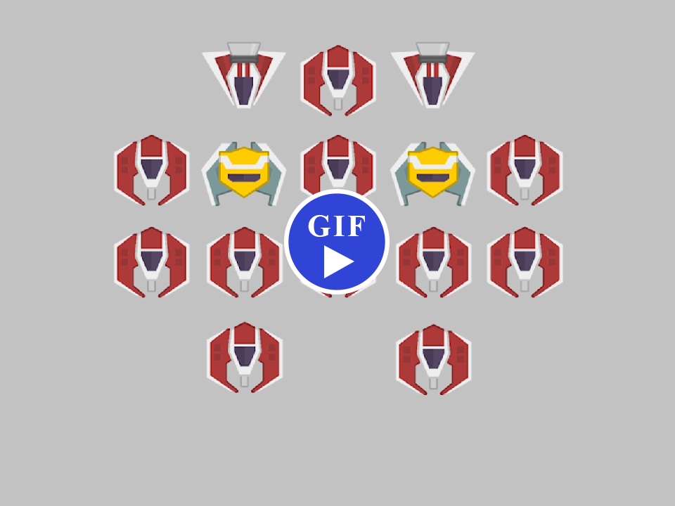

Phase Drift is a mobile arcade shooter, where the stages are different every run.
This was made as a semester long project for the last class in the Game Design sequence at Tri-C. The prompt was to make a game throughout the semester, and we were encouraged to upload it publicly at the end. I made it my challenge to make an Android game, with platform integration and monetization by the end of the project.
I played a lot of different space shooter arcade games growing up; Galaga, Space Invaders, Phoenix (on my TI-84). I missed playing these games but I couldn't find any good alternatives on mobile. Many of the games had very clunky on-screen controls and were filled with glitches or questionable design choices. I set out to make a game that brought the old-school action I craved to mobile, while keeping the scope small enough to complete on time.
Most of the old arcade shooters are designed so that they restart every time you die, which is something I enjoy in the roguelike games I play as well. Unlike rogue-likes, many of the old arcade shooters have the exact same levels every time, which leads to strategies like robotically racing to memorized safe spots. I avoided this, and generally made the game more interesting to replay, by adding random stage generation.
I had already made a system that accepts a 2D pixel image to spawn the level, as a simple tool to make designing them easier. So the system I made to generate levels outputs the same thing, meaning the templates I eventually made were simple to make as well.
The system works by pasting enemy layouts on top of each other. Combining multiple templates on top of each other compounds the output of my work. Each enemy in the game had multiple sets of templates that varied in the amount. The game maintains a progression by introducing new enemies in a set order through the game.
Here’s a rundown of how it generates:
public class SpawnMapGenerator : MonoBehaviour
{
//...
public Texture2D CreateLevel()
{
//make a list of the enemy types for the level
string[] names = GetNamesForLevel();
//this enemy layout texture will be passed to the level spawner
return CreateLevelTexture(enemyNames[0],enemyNames[1],enemyNames[2],enemyNames[3],enemyNames[4]);
}
public Texture2D CreateLevelTexture(string firstEnemyName, string secondEnemyName, string thirdEnemyName, string forthEnemyName, string fifthEnemyName)
{
//grab a template for each enemy listed, some may be blank
Texture2D enemyLayoutOne = TexFromArray(ArrayFromName(firstEnemyName), UsedListFromName(firstEnemyName));
Texture2D enemyLayoutTwo = TexFromArray(ArrayFromName(secondEnemyName), UsedListFromName(secondEnemyName));
Texture2D enemyLayoutThree = TexFromArray(ArrayFromName(thirdEnemyName), UsedListFromName(thirdEnemyName));
Texture2D enemyLayoutFour = TexFromArray(ArrayFromName(forthEnemyName), UsedListFromName(forthEnemyName));
Texture2D enemyLayoutFive = TexFromArray(ArrayFromName(fifthEnemyName), UsedListFromName(fifthEnemyName));
//overlay enemy templates to create one texture
Texture2D levelTex = BlankTex();
OverlapEnemy(ref levelTex,enemyLayoutOne);
OverlapEnemy(ref levelTex,enemyLayoutTwo);
OverlapEnemy(ref levelTex,enemyLayoutThree);
OverlapEnemy(ref levelTex,enemyLayoutFour);
OverlapEnemy(ref levelTex,enemyLayoutFive);
return levelTex;
}
void OverlapEnemy(ref Texture2D baseTex, Texture2D overlapTex)
{
//overwrites the base texture wherever the overlap texture is opaque
for (int x = 0; x < overlapTex.width; x++){
for (int y = 0; y < overlapTex.height; y++){
Color pixel = overlapTex.GetPixel(x,y);
if (pixel.a != 0){//opacity check
baseTex.SetPixel(x,y,pixel);
}
}
}
}
//...
string[] GetNamesForLevel()
{
//prepare a list of enemy names appropriate for this stage
int sector = RunController.ThisSector;
int stage = RunController.ThisStage;
int numberSectorsPremade = 5;
if (sector <= numberSectorsPremade){//the first sectors introduce each enemy, one by one
return PremadeLevels(sector,stage);
}else{//after all enemies are introduced, the combinations of them continually get harder
return GeneratedLevel(sector,stage);
}
}
//...
}
The Menus in Phase Drift are very modular. I implemented a system to manage the menus so that I could use the exact same menus in game as on the start screen. It also benefited me by making menu creation and animation easier. And implemented duplication of work in many ways.
Each submenu has its own prefab and script. The prefabs contain the Unity UI canvas. The script controls any special behavior for the menu, links buttons to actions, and inherits basic menu behavior (like going back a menu, triggering routine animations). This system also keeps the submenus well-contained from each other. Generally adding a submenu could be a quite tedious task by default, but with this system I spent more of that time making cool layouts and animations.
public abstract class Menu : Menu where T : Menu
{
public static T Instance { get; private set; }
protected virtual void Awake()
{
Instance = (T)this;
}
protected virtual void OnDestroy()
{
Instance = null;
}
protected static void Open()
{
//creates an Instance of T Menu, if it doesn't exist yet
if (Instance == null)
MenuManager.Instance.CreateInstance();
else
Instance.gameObject.SetActive(true);
MenuManager.Instance.OpenMenu(Instance);
}
protected static void Close()
{
if (Instance == null)
{
Debug.LogErrorFormat("Trying to close menu {0} but Instance is null", typeof(T));
return;
}
MenuManager.Instance.CloseMenu(Instance);
}
public override void OnBackPressed()
{
Close();
}
}
public abstract class Menu : MonoBehaviour
{
//Unity Editor interface
[HeaderAttribute("Menu Fields")]
[Tooltip("Destroy the Game Object when menu is closed (reduces memory usage)")]
public bool DestroyWhenClosed = true;
[Tooltip("Disable menus that are under this one in the stack")]
public bool DisableMenusUnderneath = true;
public bool animates = false;
public abstract void OnBackPressed();
public abstract void AnimateFromBase();
}